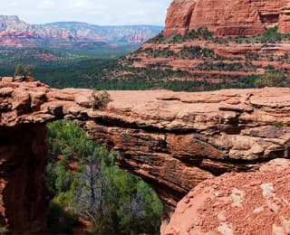

Преимущества.
Седона — небольшой городок в аризоне,
заслуживающий большего!
Рассмотрим 5 причин, по которым Седона круче, чем гранд каньон!
Настоящий городок
— №1 —не аттракцион для туристов, там течет своя жизнь

Жилье
Рекомендуем пожить в настоящем мотеле, все как в кино!
Еда
Всегда заказывайте фирменный бургер, вы не разочаруетесь!
Сувениры
Не только китайского, но и местного производства!
Там есть мост дьявола
— №2 —Да, по нему можно пройти! Если вы осмелитесь, конечно
 Небольшая площадь
— №3 —Вcе интересные места находятся очень близко
Красивая дорога
— №4 —Ехать в сторону Лас-Вегаса совсем не скучно!
Мало туристов
— №5 —Большинство едет в гранд каньон и толпится там
Поиск гостиницы.
Заинтересовались?
Укажите предполагаемые даты поездки,
и мы покажем вам лучшие предложения гостиниц в седоне